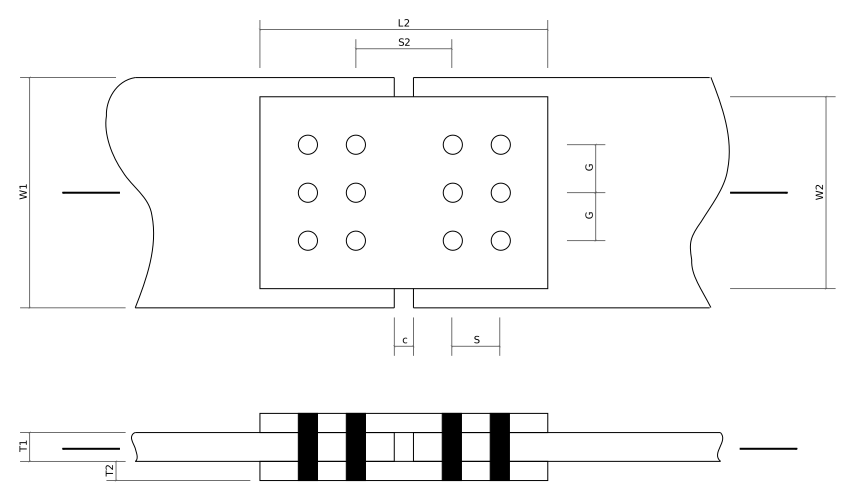
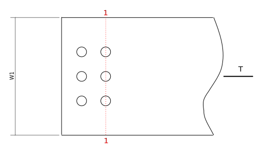
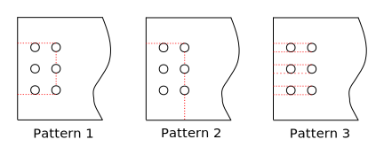
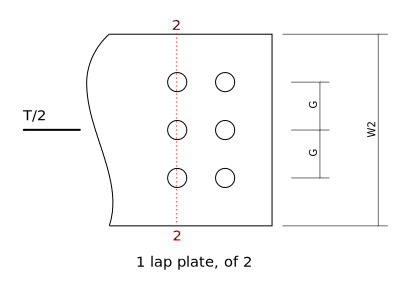

Tension Member: Lap Splice
Compute the factored tension resistance, $T_r$, of the following plate tension member with a lap splice. Ignore the connection details at the far ends of the member (not shown). The bolts are 3/4” A325 in a bearing-type connection (assume threads intercepted). The plates are of CSA G40.21 350W steel.

import sys
sys.path[1:1] = ['../ca-steel-design/lib']
from Designer import show,Recorder
# Material properties:
Fy = 350. # CSA G40.21 350W
Fu = 450.
Fub = 825. # bolt, ASTM A325
# Main plate dimensions:
W1 = 300.
T1 = 25.
C = 10. # clearance between ends
# Lap plate dimensions:
W2 = 220.
T2 = 14.
L2 = 350.
# bolting dimensions
D = 25.4*(3/4) # bolt dia
threads_intercepted = True
HA = 22. + 2. # hole allowance - 3/4" bolts in 22mm punched holes
G = 75. # gauge
S = 75. # transverse spacing
NT = 3 # number of bolts across
NL = 2 # number of lines of bolts each side
S2 = 140.
show('Fy,Fu,Fub,W1,T1,C,W2,T2,L2,D,HA,G,S,S2,NT,NL')
Check Bolting Details
Edge distance, end distance and spacing
min_edge = 32 # S16 22.3.2, min edge distance, 3/4" bolt, sheared edge, Table 6
max_edge = min(12*T2,150) # S16 22.3.3
min_end = min_edge if NL > 2 else 1.5*D # S16 22.3.4
min_pitch = 2.7*D # S16 22.3.1
show('min_pitch,min_edge,min_end,max_edge')
Center plate:
edge = (W1 - (NT-1)*G)/2.
end = (S2 - C)/2.
show('edge,end')
assert edge >= min_edge
assert edge <= max_edge
assert end >= min_end
##assert S >= min_pitch
##assert G >= min_pitch
assert S2 >= S
assert S**2 + G**2 >= min_pitch**2 # to be more precise ...
Lap plate:
edge = (W2 - (NT-1)*G)/2.
end = (L2 - ((NL-1)*G*2 + S2))/2.
show('edge,end')
assert edge >= min_edge
assert edge <= max_edge
assert end >= min_end
Factored Resistance
record = Recorder()
Main plate

Yield on Gross Area
If the gross (unrediced) cross-section reaches the yield stress, there will be considerable axial elongation as yield starins are reached of the lenght of the member. This is considered a failure (and a limit state).
Ag = W1*T1 # gross x-sectional area
phi = 0.9
Tr = phi*Ag*Fy * 1E-3 # S16 13.2 a) i)
show('Ag,Tr')
record('Tr',Tr,'13.2 a) i) - gross area yield, centre plate')
Fracture on Effective Net Area
When the average stress across the net (reduced) area occurs, fracture will occur on that area. This is, of course, a failure mode. Normally, an account is made of how non-uniform load transfers can affect the stress distribution across the cross-section - that is done by computing an effective net area, $A_{ne}$. Because the bolts in this connection transfer loads approximately uniformly across the entire cross-section, we can consider the effective net area to be equal to the net area of possible failure surface 1 in the above figure. (S16 12.3.3.1)
wn = W1 - NT*HA # subtract total width of material removed by holes, failure path 1
Ane = An = wn*T1
phiu = 0.75
Tr = phiu*Ane*Fu * 1E-3 # S16 13.2 a) iii)
show('wn,An,Ane,Tr')
record('Tr',Tr,'13.2 a) iii) - Net section fracture, centre plate')
Block Shear
Other potential failure modes involve tension and shear ruptures in combination around the bolt holes. The following figure shows 3 different potential failure patterns that must be investigated. Note that Pattern 3 is often called ‘tear-out’ or ‘pull-out’. 
## Pattern 1
e = S2/2. - C/2. # end distance to centre of 1st bolt hole
Agv = (e + (NL-1)*S)*T1*2. # shear area
An = (NT-1)*G * T1 # tension area
Ut = 1.0
phiu = 0.75
Tr = phiu*((Ut*An*Fu) + (0.6*Agv*(Fy+Fu)/2.)) * 1E-3 # S16 13.11
show('Ut,An,Agv,Tr')
record('Tr',Tr,'13.2 a) ii) - 13.11 - Block Shear Pattern 1 - centre plate')
## Pattern 2
Agv = (e + (NL-1)*S)*T1 # shear area
g1 = (W1 - (NT-1)*G)/2. # edge distance to centre of hole
An = ((W1-g1) - (NT-0.5)*HA)*T1
Ut = 0.6 # no good guidelines in commentary - this should be conservative
Tr = phiu*((Ut*An*Fu) + (0.6*Agv*(Fy+Fu)/2.)) * 1E-3 # S16 13.11
show('Ut,An,Agv,Tr')
record('Tr',Tr,'13.2 a) ii) - 13.11 - Block Shear Pattern 2 - centre plate')
## Pattern 3 - tear-out
Agv = (e + (NL-1)*S)*T1 * (NT*2.) # shear area
An = 0.
Ut = 0. # N.A.
Tr = phiu*((Ut*An*Fu) + (0.6*Agv*(Fy+Fu)/2.)) * 1E-3 # S16 13.11
show('Ut,An,Agv,Tr')
record('Tr',Tr,'13.2 a) ii) - 13.11 - Block Shear Pattern 3 - centre plate')
Lap Plates

The side plates have similar failure modes and so will be computed here without much additional comment. In all cases we will use the dimensions of a single plate, then will multiply the resistance by 2 to account for the two plates.
Yield on Gross Area
Ag = W2*T2 # gross x-sectional area
phi = 0.9
Tr = 2. * phi*Ag*Fy * 1E-3 # S16 13.2 a) i)
show('Ag,Tr')
record('Tr',Tr,'13.2 a) i) - gross area yield, two side plates')
Fracture on Effective Net Area
wn = W2 - NT*HA # subtract total width of material removed by holes, failure path 2
Ane = An = wn*T2
phiu = 0.75
Tr = 2. * phiu*Ane*Fu * 1E-3 # S16 13.2 a) iii)
show('wn,An,Ane,Tr')
record('Tr',Tr,'13.2 a) iii) - Net section fracture, two side plates')
Block Shear
## Pattern 1
e = (L2 - S2 - (NL-1)*S*2.)/2. # end distance to centre of 1st bolt hole
Agv = (e + (NL-1)*S)*T2*2. # shear area
An = (NT-1)*G * T2 # tension area
Ut = 1.0
phiu = 0.75
Tr = 2. * phiu*((Ut*An*Fu) + (0.6*Agv*(Fy+Fu)/2.)) * 1E-3 # S16 13.11
show('Ut,An,Agv,Tr')
record('Tr',Tr,'13.2 a) ii) - 13.11 - Block Shear Pattern 1 - two side plates')
## Pattern 2
Agv = (e + (NL-1)*S)*T2 # shear area
g2 = (W2 - (NT-1)*G)/2. # edge distance to centre of hole
An = ((W2-g2) - (NT-0.5)*HA)*T2
Ut = 0.6 # no good guidelines in commentary - this should be conservative
Tr = 2. * phiu*((Ut*An*Fu) + (0.6*Agv*(Fy+Fu)/2.)) * 1E-3 # S16 13.11
show('Ut,An,Agv,Tr')
record('Tr',Tr,'13.2 a) ii) - 13.11 - Block Shear Pattern 2 - two side plates')
## Pattern 3 - tear-out
Agv = (e + (NL-1)*S)*T2 * (NT*2.) # shear area
An = 0.
Ut = 0. # N.A.
Tr = 2. * phiu*((Ut*An*Fu) + (0.6*Agv*(Fy+Fu)/2.)) * 1E-3 # S16 13.11
show('Ut,An,Agv,Tr')
record('Tr',Tr,'13.2 a) ii) - 13.11 - Block Shear Pattern 3 - two side plates')
Fasteners (Bolts)
Shear
Here we compute the shear strength of one of the bolt groups.
n = NT*NL # number of bolts
m = 2. # number of faying surfaces
Ab = 3.14159*D*D/4.
phib = 0.80
Vr = 0.60*phib*n*m*Ab*Fub * 1E-3 # S16 13.12.1.2 c)
if (NL-1)*S >= 760.:
Vr = (0.5/0.6)*Vr
if threads_intercepted:
Vr = 0.7*Vr
show('n,m,Ab,Vr')
record('Tr',Vr,'13.12.1.2 c) - shear resistance of bolts')
Bearing
n = NT*NL
t = min(T1,2.*T2)
phibr = 0.80
Br = 3.*phibr*n*t*D*Fu * 1E-3
show('n,t,Br')
record('Tr',Br,'13.12.1.2 a) - bearing resistance at bolt holes')
Summary
record.summary()
Things not done
- L/r ratio
- Connections at ends